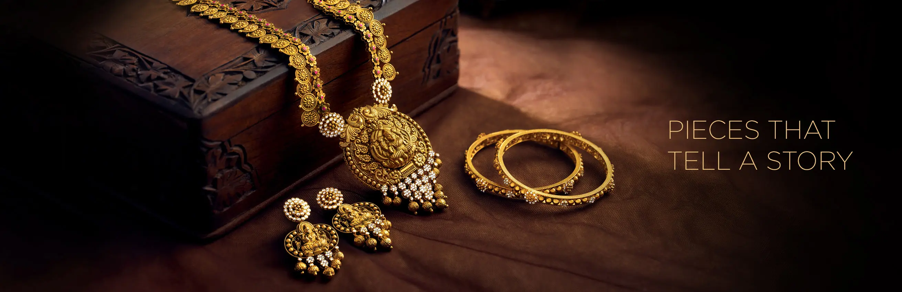

Gold Jewellery
Prized for its beauty and versatility, gold is the classic setting for most jewelry. It's also the most malleable of all metals — so soft it can't be used for jewelry in its purest form. The standard measurement of gold is the karat. Pure gold is 24 karats, meaning 24 out of 24 parts are gold.Gold jewellery is the best investment for your future. Our gold jewellery is sure to turn heads. Our collections range from intricate antique handcrafted designs to contemporary ornaments.
